Short Wayze
Timeline: Jan 2020 - Mar 2020
Role: User Researcher, Designer, and Developer
Project Overview
As part of an Interaction Design course at UC San Diego, I worked in a team of three to research, design, and develop a mobile web app. Through this 10 weeks, we learned design principles and techniques and the web development process.
Our app, called Short Wayze, aims at helping new students and visitors get across UCSD campus faster while avoiding constructions and cops, and giving users a better understanding of the campus. I was primarily responsible for designing and developing the user interface, user testing, and setting up weekly meetings. I also contributed to user research and app deployment.
Problem Statement
"I'm often late to class because I'm new to campus and don't know my way around. I tried to use Google Maps but it doesn't provide shortcuts or show UCSD building plans. "
UC San Diego has a large campus and new students and visitors coming to UC San Diego may not be knowledgeable of the layout of the campus. Therefore, they often waste their precious time taking long routes or looking for a classroom in a new building.
Need-finding and Research
The first step of our design process was to observe people to understand our target audience and identify breakdowns. We started by conducting interviews and asking open-ended questions, such as:
- What do you like about UCSD? What don’t you like about UCSD?
- When was the last time that you were lost on campus? What happened?
- How do you get to class?
From these interviews, we were able to get better insights on the problems that our target users were facing. These were the common problems among the first-year, second-year, transfer students, and visitors:
- Difficulty finding buildings and classrooms
- Not knowing the shortcuts around campus
- Running into cops while skateboarding and biking
- Had problems finding detours when there were constructions.
After figuring out our target audience and user needs, we started an inspiration board by taking three apps that relate to our design idea and pulling inspirations from these three apps. For example, we liked the step-by-step and directions functionality by Google Maps , the reporting features in Waze , and the ability to view and import floor plans in Magicplan.
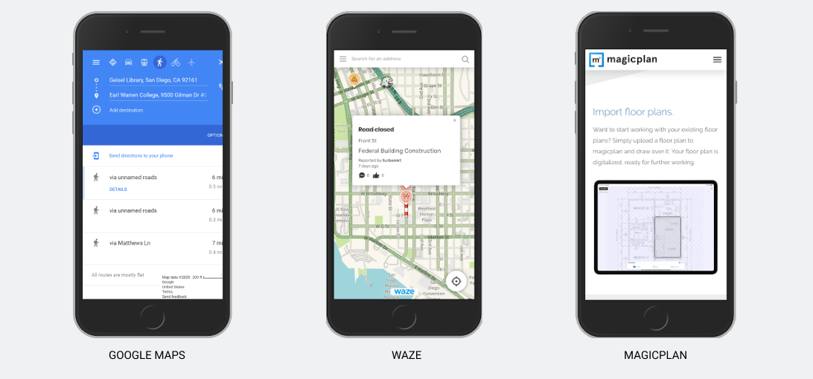 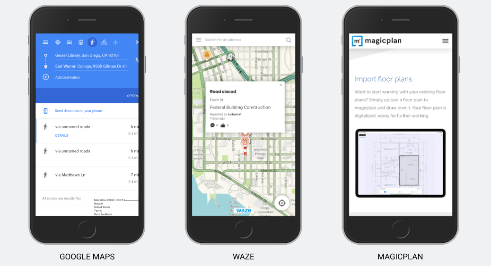Storyboarding
To begin the design process, we created storyboards that could potentially be the solutions to our problem statement. It was important for us to focus on problems and situations rather than features and functionalities. By doing these storyboards, we were able to get an idea of how users will interact with our design and app.
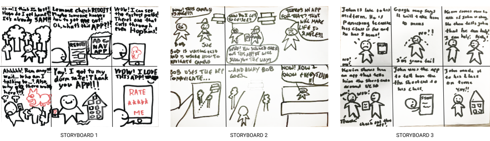Paper Prototyping
Our next step in the design process was to take our storyboards and create paper prototypes . These prototypes were low-level because we wanted to focus on the important UI elements rather than the visual appearance of the application . However, it was hard for us not to focus on the small details because it was our first time making paper prototypes. Looking back, we were proud of ourselves that we did not waste a lot of time focusing on the appearance of the app.
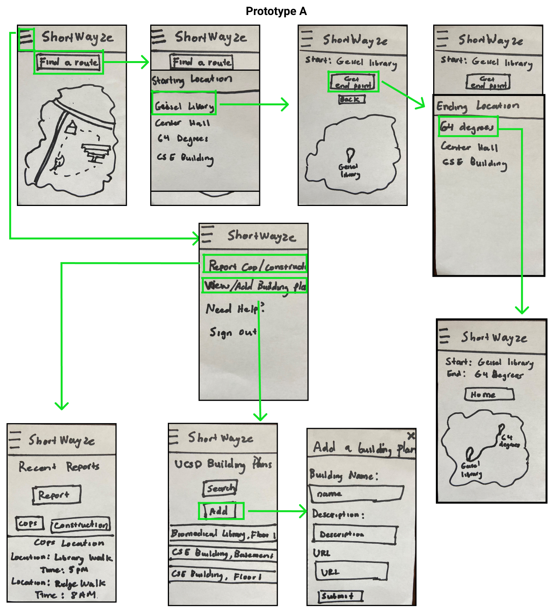 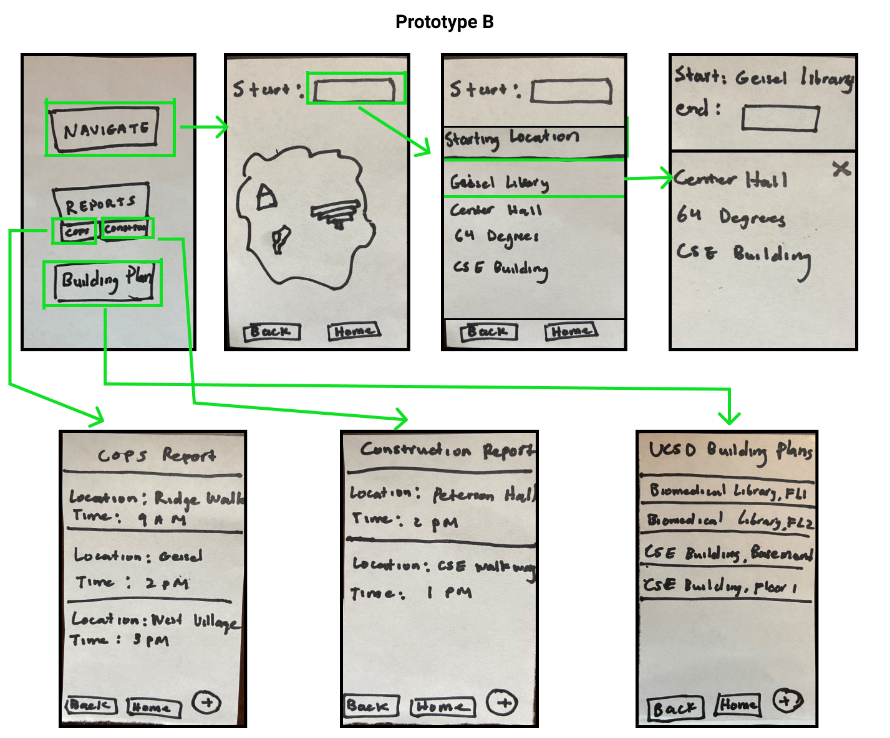Heuristic-Evaluation
After creating our two paper prototypes, we conducted heuristic evaluations on three users, following Jacob Nielson’s 10 general principles for interaction design . Below are our findings from the evaluations:
- Prototype A: There were a few common issues that three of our users encountered when testing prototype A. First, when they first arrived at the homepage, they weren’t sure what to do next due to lack of instructions on the page for first time users. Second, after selecting the starting and ending location, they were confused as to why a static image of the map showed up the path drawn out. Users reported that it would be helpful to see the route more clearly. Lastly, users were stuck trying to figure out how to delete a report that has been there for a long time and said that they would like the ability to delete or hide old reports.
- Prototype B: While observing users testing our paper prototype B, we noticed a few problems that users were having trouble with. Most testers did not like clicking two different tabs to see the cops report and construction report. They said they would rather have both of these reports on one page. Many also thought that their report was not added when in actuality it was. So they suggested that a pop up message saying their report was added would be helpful.
Wireframing
After testing our paper prototypes and going over the feedback that our testers gave us, we would then combine the feedback and suggestions from both prototypes to create our first wireframes.
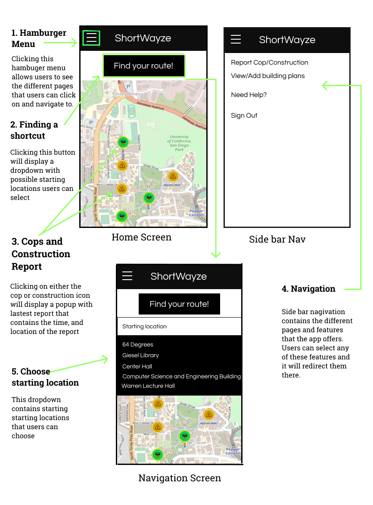 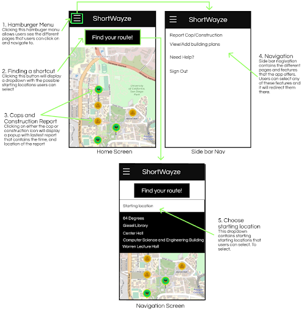User Testing
After we finished creating our wireframes, we began to code those wireframes into a semi-functional application that could be tested. Before testing, we created tasks that we wanted our testers to do:
- find a shortcut from Geisel Library to 64 Degrees
- find the CSE floor 1 building plan
- Upload a new UCSD building plan
We created these tasks because we were particularly interested in how our users interact with the shortcut functionality as well as how they respond to the layout of the building plans. We asked the user to think out loud as they complete the task because the goal of this test is to identify any problems users may have in understanding or finding a shortcut and a building plan using our app. Below are our findings from the test:
- Users tried to click on icons on static map but nothing happened
- Users were not sure where to route was telling them to go because the map was to small
- Users were confused whether their building plan was succesfully added
- First time visitors were unsure where to start
User: User thought that the cop and construction markers/icons on the map were clickable. He tried to click on every icon and realized that nothing happened. The markers were misleading because map markers/icons are usually clickable. However, he was able to identify what the icons were just by looking at them.
A/B Testing
In addition to the heuristic evaluations we conducted, we also wanted to collect data on two variations of our building plan page. So we created an A/B testing through Google Analytics. We wanted to get data on how long users spend on each page and how often they use the search functionality.
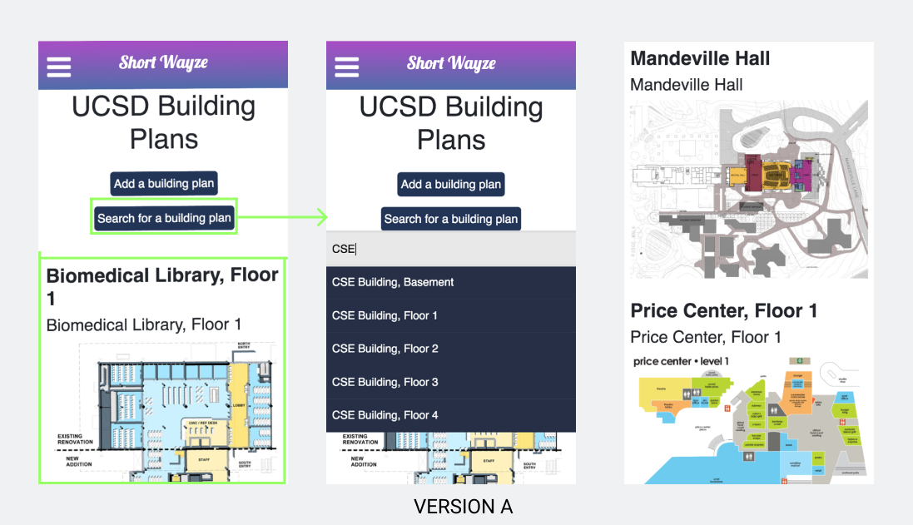 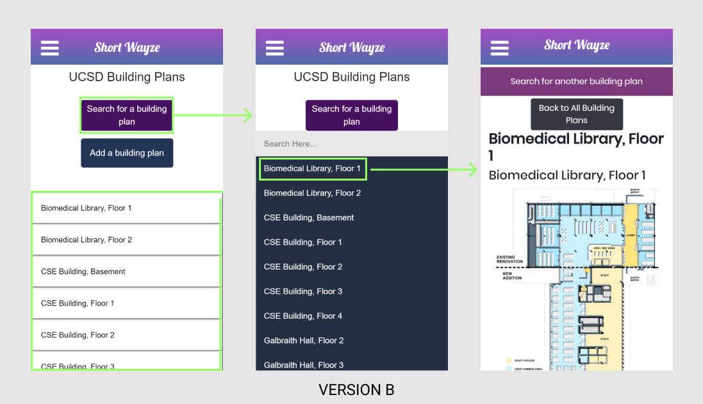Version A: This was our original version where we had listed out every building plan in a scrollable layout.
Version B: For this version, we redesigned the layout by replacing the scrollable layout with a collapsible layout.
Final Design: Our A/B testing showed that users spent more time on Version B and they used the search functionality more. We think this was due to the fact that Version B has a cleaner and more friendly UI. Therefore, we decided to keep this version as our final design.
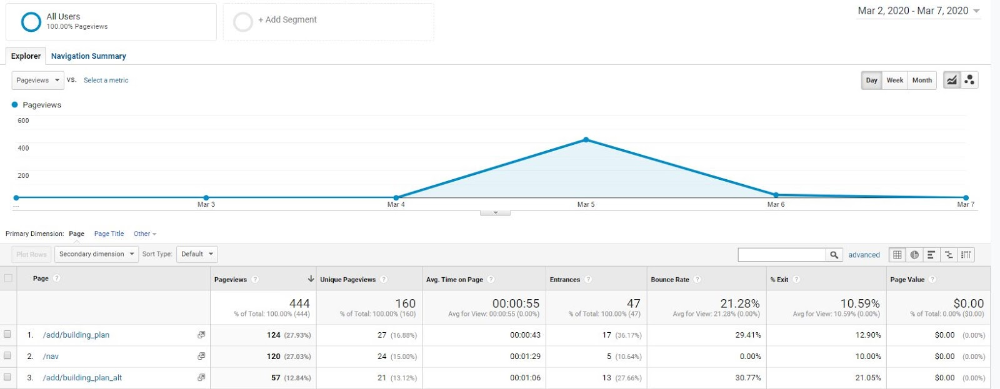Design Iterations
Homepage
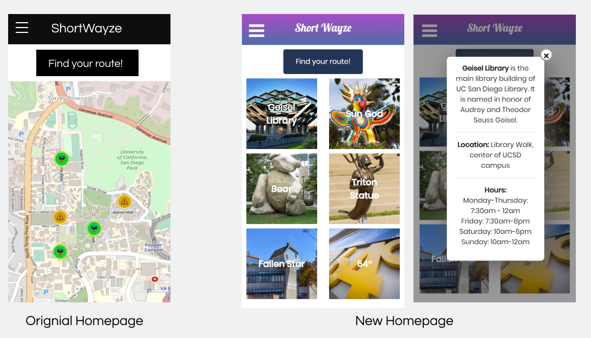Homepage: Originally we wanted the homepage to have a live map with cops and construction markers on it. We had assumed that users would understand that it is a static map and they would not be able to interact with it. However, through user testing we found out that our assumption was wrong. First time users thought it was an interactive map and tried to click on the icons only to find out, they don’t do anything. Furthermore, for first time visitors visiting UCSD, they did not know the landmarks and routes so they were struggling with how to use the app itself. So we took these feedbacks and redesigned our homepage UI. In our new homepage, we got rid of the map and replaced it with six famous landmarks at UCSD. Each location card contains a short background, the location, and hours. This will provide new visitors to campus an idea of places to visit at UCSD.
Route/Direction
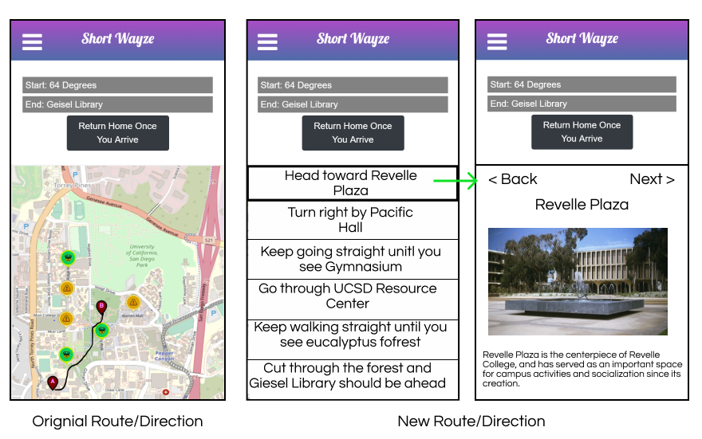 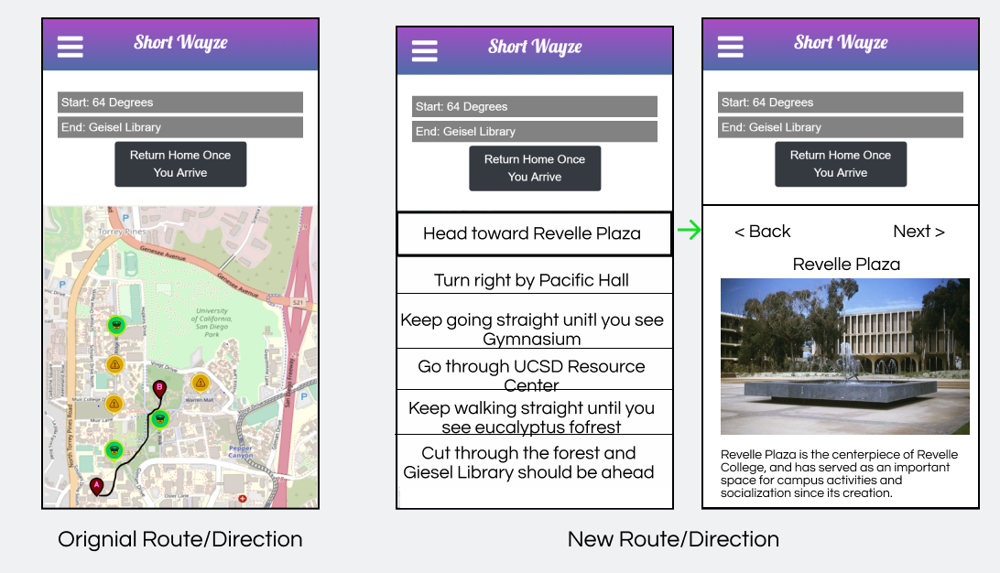Route and Direction: When we first started brainstorming design ideas for the shortcut feature, we wanted to do something similar to Google Maps and Waze, which would require using Google API for a live map. However, since we had never used Google API before and we were also under a time crunch, we had trouble implementing the live map. So we decided to just use a static map with the shortcuts drawn out manually. After reviewing the feedback from our user testings, we noticed common problems that our users faced with the static map. First, they had trouble understanding the route because the map was so zoomed out. Secondly, new visitors to campus had no idea where to start or turn because of their lack of understanding of the layout of the campus. So, I decided to redesign and implement the functionality of the shortcut feature. Since our app targets new users coming to UCSD, I replaced the static map, with step by step directions, using landmarks as guiding points. Users can click on the direction and see the picture of the landmark and some facts about that landmark.
Report

Report: The original design of the
report page was too clustered and was overwhelming to users. I decided
to change the page title to a smaller font size because the font size
was too big. Also, I added an information icon to replace the long
texts that made the page look clustered. The icon makes the UI look
more user friendly while still achieving the same purpose as the
original design; informing users what the page is about.
Building Plans
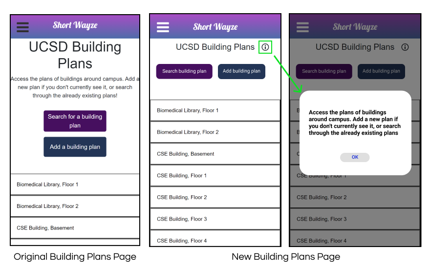
Building Plan: Originally we did not
include any information about the page that the user is currently on
because we assumed that the page was self explanatory. However, after
looking at the user testing feedback, our assumption was wrong. Users
were not sure about what they could do on the page. So we tooks those
feedback and added some texts to inform users what the page is about.
However, the texts made the page look clustered. So we decided to fix
the page styling by adding an icon that displays a pop up information
if users clicked on it. This makes the page look cleaner. Also we also
group the buttons horizontal because it’s easier to read for left to
right then top to bottom.
Final Product
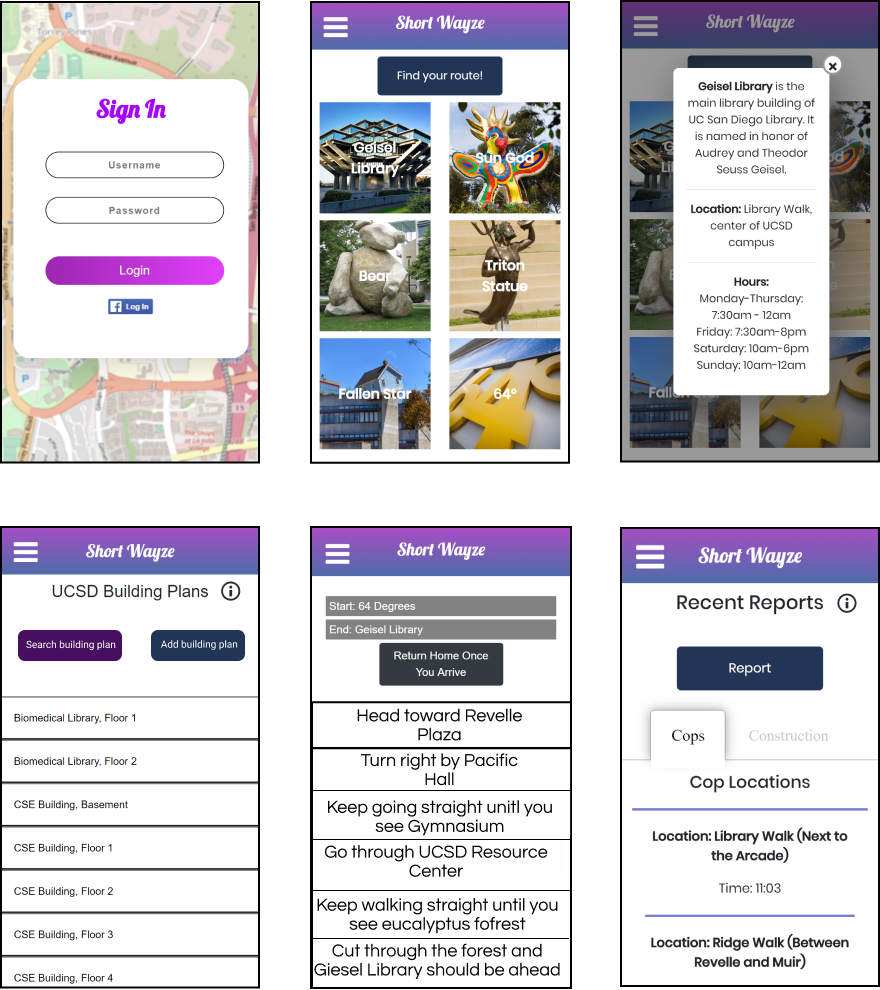Reflection
Working on this project I learned the steps of creating an app idea and going from development to production level. I learnt how to divide these tasks to be efficient in development, and how to merge different ideas into one final product. I also became familiar with the process of incorporating user feedback into our app and the importance of having third parties critique our work outside of our group. Some good planning choices we made as a team were having weekly meetings about the status of our work, and assigning each member to a task to speed up the development. Some less successful planning decisions were that we tended to end up doing most of the weekly work a few days before the deadline so oftentimes we were crunched for time towards the end. If I were to do it again, I would focus more on starting earlier so that my team could feel less pressure throughout the week, and maybe set more realistic goals for what we want our app to do while taking into consideration our skill level with HTML, CSS, and Javascript.